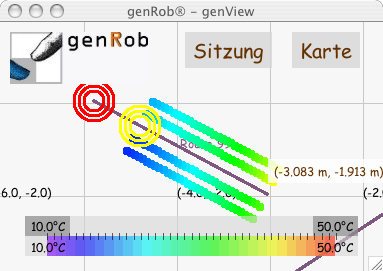

Bedienelemente
Mit den Bedienelementen kann wird die Meßwerterfassung gesteuert.
Die Bedienelement zur Meßwerterfassung erscheinen nur, wenn eine Sitzung
offen ist.
Ist die Verbindung zu genRob®-genPCAN unterbrochen, so erscheinen die
Bedienelement grau.
Dann ist keine Bedienung möglich.
Je nach eigener Position in der Karte startet man eine Meßdatenerfassung
auf der einen oder der anderen Seite einer Route.
Danach verschwinden alle grünen Bedienelemente und ein gelbes und ein rotes
erscheinen.
Arbeitet man mit dem Handwagen zur Meßdatenerfassung kann man jetzt mit
Schieben entlang der Route beginnen.
Das rote Bedienelement ist am anderen Ende der ausgewählten Route;
das gelbe ist auf der momentanen Position der Meßdatenerfassung.
Will man die Meßdatenerfassung abbrechen, so betätigt man das gelbe
Bedienelement.
Ist die Meßdatenerfassung erfolgreich verlaufen, so betätigt man bei
Erreichen des (realen) Endpunktes das rote Bedienfeld.
Daraufhin werden von genView die Meßdaten entlang der gesamten (grafischen)
Route verteilt, um den entstandenen Schlupf der Positionmessung
auszugleichen.
Danach werden die Daten gespeichert.
Sind die Daten gesichert, so kann man weitere Meßfahrten durchführen.
Betätigt man nun an der gleichen Route erneut ein grünes Bedienfeld, so
verwirft genView die bisherigen Daten und startet erneut mit dieser Route
eine Meßdatenerfassung.

© 2002-2007
Hagen Stanek,
genRob®
genSite 2.1.2
|